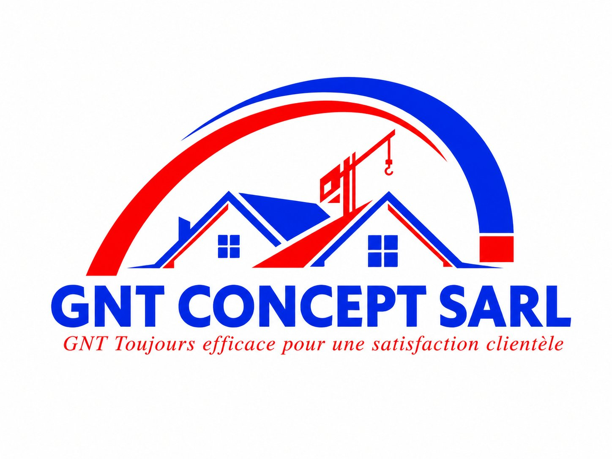
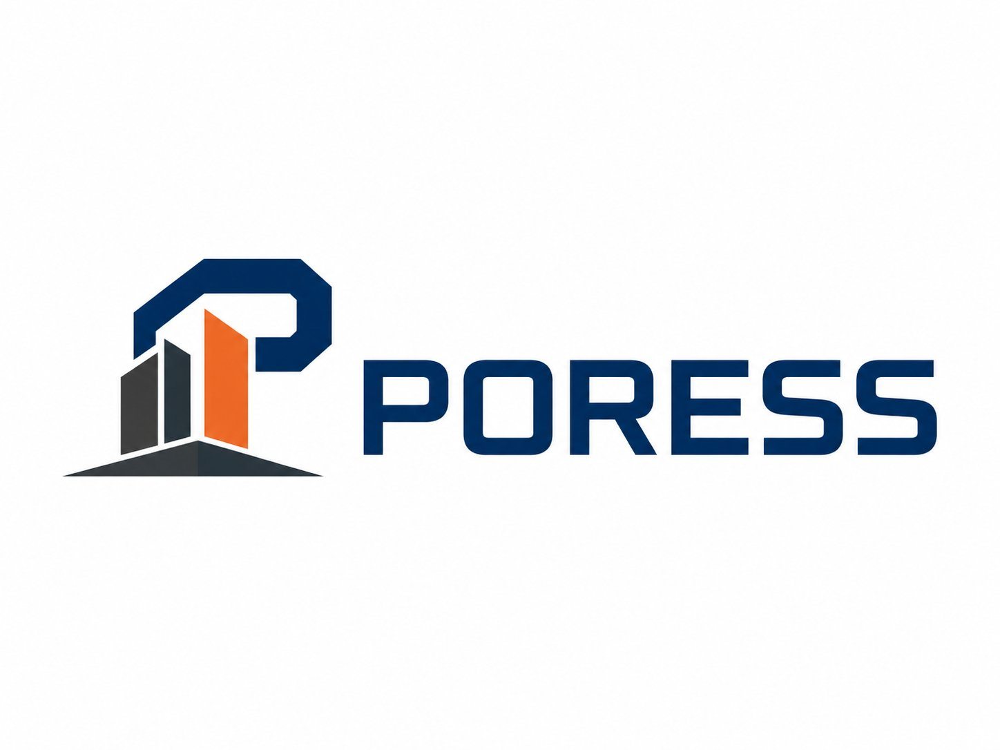
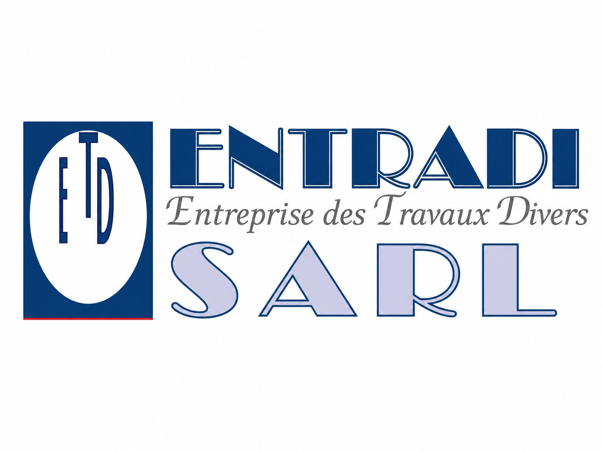
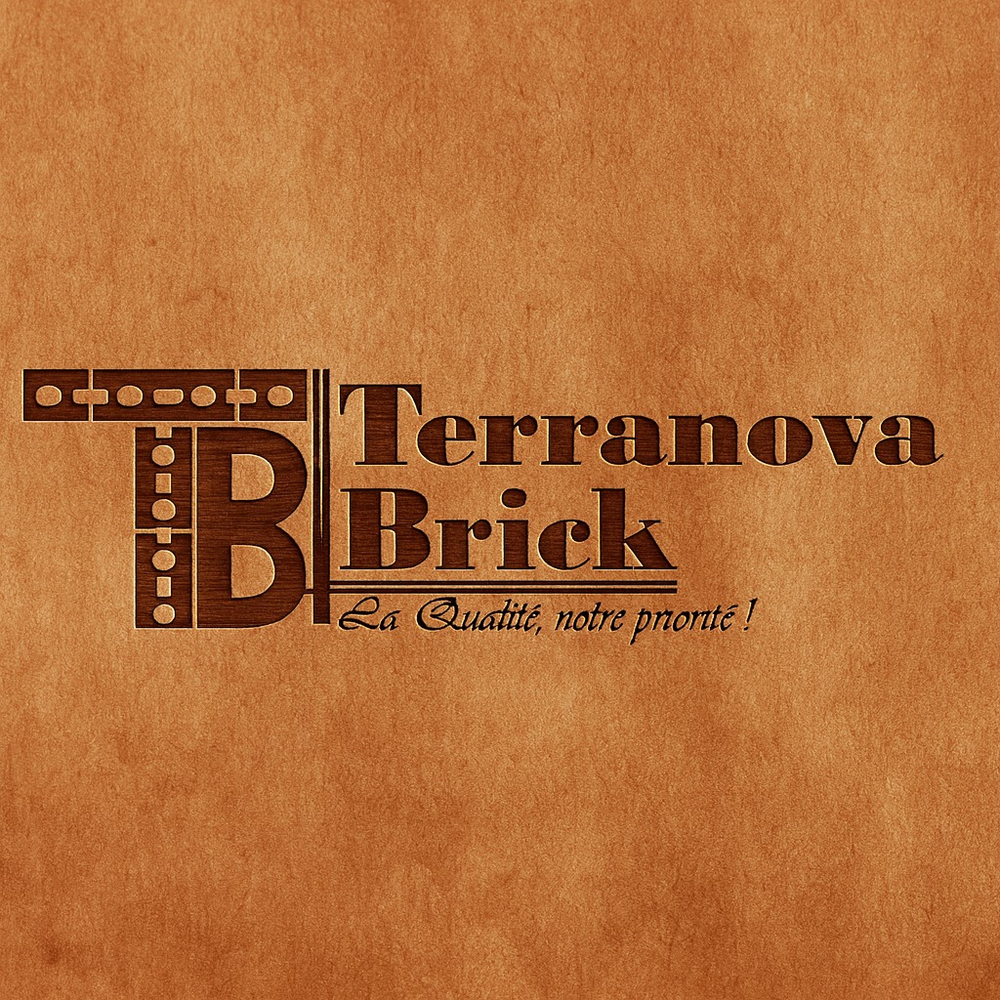
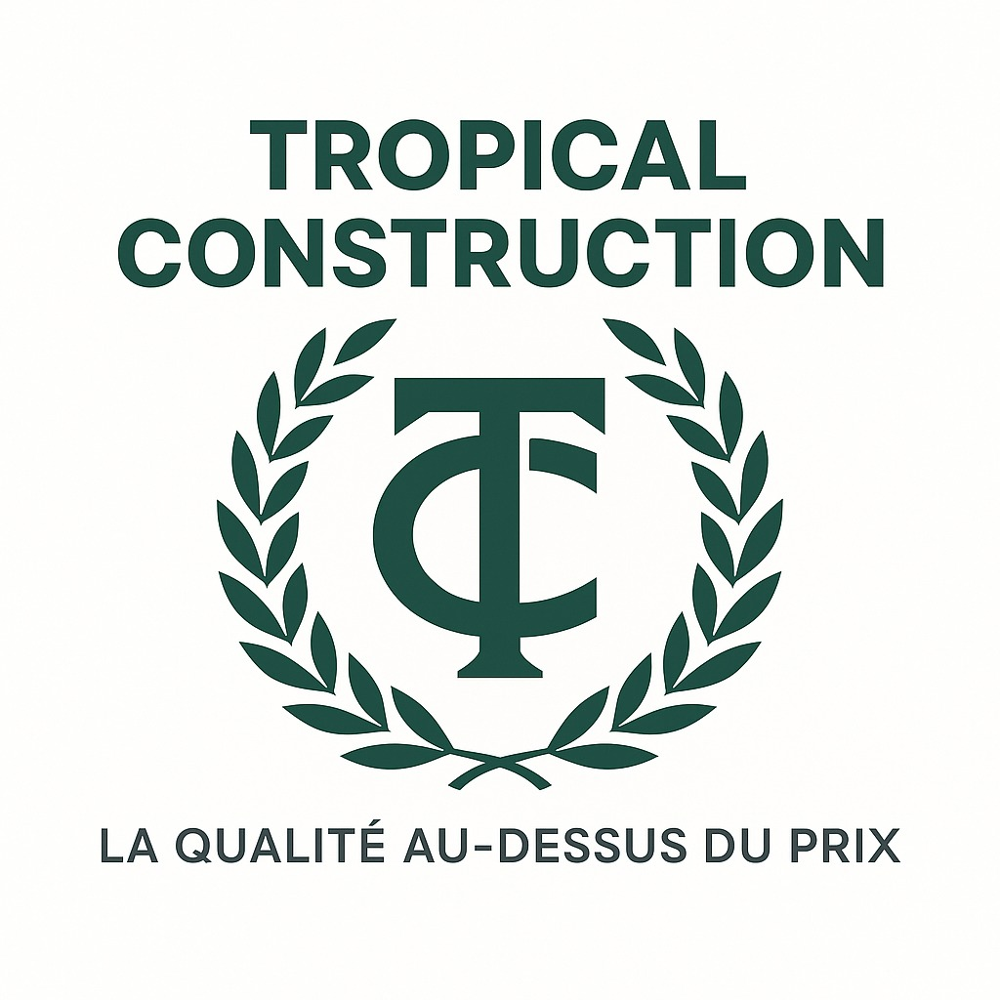
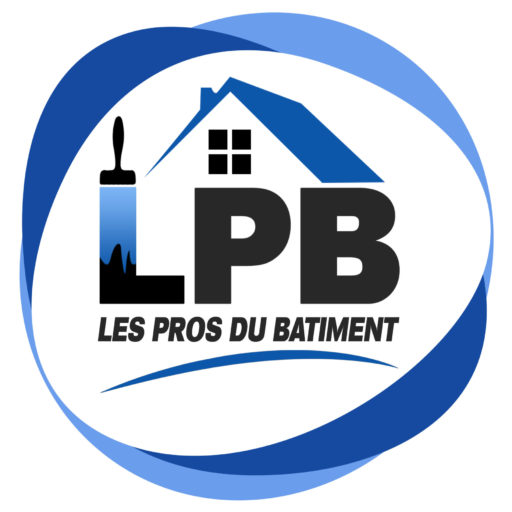
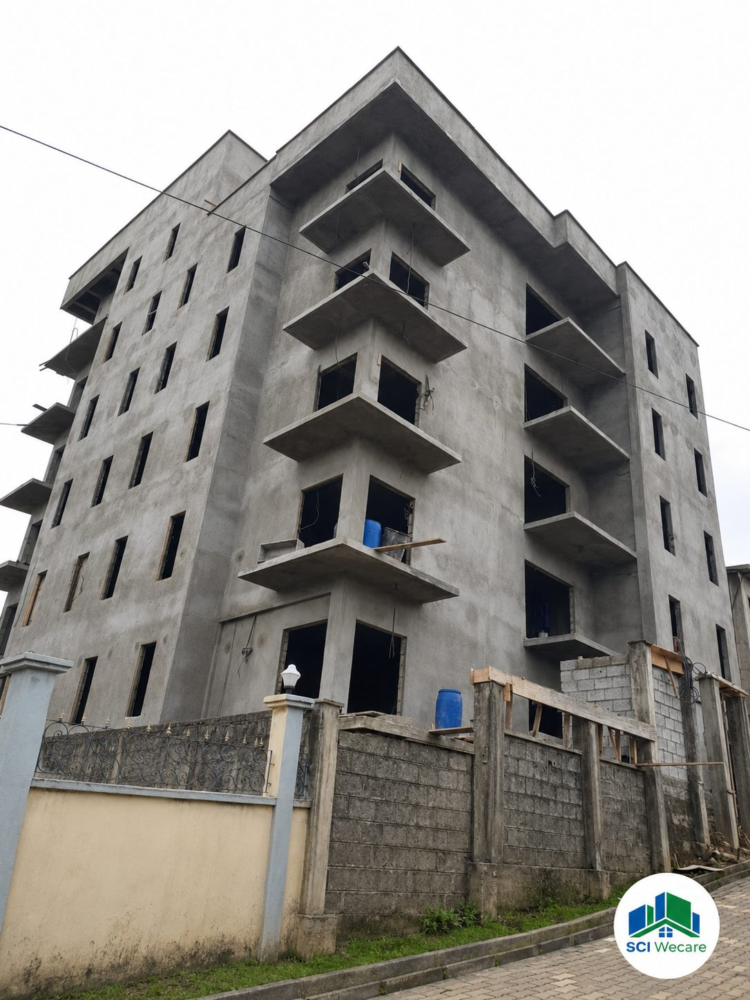

KOMA Expertise pilote à distance vos projets immobiliers en Afrique — construction, rénovation, reprise, aménagement, gestion. Une méthode structurée, des preuves à chaque étape, une plateforme qui vous redonne la maîtrise complète de votre projet.
KOMA transforme un projet immobilier risqué, flou ou éloigné en un parcours clair, piloté, documenté et contrôlé.
7 phases, 28 lots qualité, 40 opérations de planning, des points d'arrêt formalisés. Le parcours est cadré dès le départ, pas inventé en cours de route.
Chaque étape produit des livrables identifiés (PV, rapports, photos horodatées, recettes). Chaque paiement majeur est conditionné à une validation contrôlée.
Toutes les décisions, livrables et paiements sont tracés et archivés. Si un problème survient demain, le dossier est là pour répondre.
Ce qui coûte cher dans un projet, ce n'est pas seulement les travaux. C'est l'argent qui part sans contrôle, le chantier qu'on ne voit pas, et les intervenants dont personne ne sait vraiment ce qu'ils font.
Les coûts dérivent. L'argent part.
Les devis ne correspondent pas aux factures. Les virements partent sans justificatif. Il devient impossible de savoir où est allé l'argent — ni ce qu'il vous reste.
On vous dit que ça avance.
Vous ne voyez pas le chantier. Vous ne recevez pas de rapports. Vous dépendez de ce qu'on accepte de vous dire — souvent trop peu, trop tard, et toujours flou.
Trop d'intermédiaires. Pas de méthode.
Entreprise, maçon, agent, cousin, notaire — chacun a sa version, rien n'est coordonné, rien n'est écrit. En cas de problème, personne n'est responsable de rien.
Vous payez sur le calendrier (ou sur la pression). Les écarts s'accumulent, vous ne pouvez plus revenir en arrière.
Chaque décaissement majeur attend la validation qualité ou la levée du point d'arrêt. Pas de preuve, pas de paiement.
De l'idée vague au chantier abouti, KOMA structure chaque étape. Vous restez décideur — KOMA est votre tiers de confiance qui pilote, documente et contrôle.
Faisabilité, budget prévisionnel, programme, terrain, niveau d'avancement — avant tout engagement.
Fiche de cadragePartenaires qualifiés, devis comparés, plans validés, qualité contrôlée à chaque étape du chantier.
Rapport terrainPhotos horodatées, alertes, rapports hebdomadaires, avancement et budget consultables 24h/24.
Reporting hebdoVous approuvez chaque paiement majeur, chaque étape clé. Aucune décision n'est prise sans votre accord.
Validation clientUne preuve est une trace datée, signée, archivée et reliée à une étape précise du projet. C'est ce qui rend une décision opposable et un paiement légitime.

Idée vague, terrain acquis, plan en cours, devis reçus, chantier en cours, chantier bloqué, bien livré à gérer — peu importe où vous en êtes, KOMA structure la suite.
Vous avez un terrain au Cameroun et un budget. KOMA vous accompagne de la conception à la remise des clés, à distance.
Votre chantier est à l'arrêt depuis des mois. KOMA audite l'existant et propose un plan de reprise structuré.
Diagnostic de l'état existant, programme de rénovation, chiffrage et suivi terrain complet avec mémoire projet.
Identification du programme, validation foncière, sélection des partenaires qualifiés et lancement structuré.
Accompagnement à l'investissement, analyse de la rentabilité, sélection et supervision du projet.
Vous avez déjà commencé mais n'avez plus de visibilité. KOMA intègre votre projet et remet en place un suivi structuré.
La plateforme KOMA utilise l'IA pour résumer les rapports, détecter les écarts visuels, anticiper les retards et alerter sur les documents manquants. Mais aucune décision n'est jamais prise par l'IA seule.
Avancement conforme au planning (+0 j). Coulage chaînage R+1 prévu mardi. Alerte ferraillage : non-conformité détectée sur 2 attentes — reprise demandée. Point positif : recette béton centrale OK (B25 confirmé).
KOMA mobilise des partenaires qualifiés par métier. Selon les besoins du projet, KOMA mobilise les partenaires les plus adaptés au périmètre, à la localisation et au niveau d'exigence du client.













Plus de 150 techniciens déjà qualifiés à travers les projets menés par l'écosystème KOMA — maçons, électriciens, plombiers, peintres, menuisiers, carreleurs, ferrailleurs, coffreurs et autres corps d'état. Chaque professionnel est progressivement évalué selon son expérience, sa fiabilité et les retours terrain.
Réseau qualifié référencé à travers les projets — les techniciens ne sont pas salariés KOMA.
Chaque référence KOMA est documentée avec son contexte, son risque client, l'intervention menée et les preuves produites. Aucune simulation, aucune surenchère.
 Japoma · Douala
Japoma · Douala
Diagnostic humidité, recettes matériaux, contrôle ferraillage, validation centrale béton. Suivi terrain documenté.
 Bangang Fokam
Bangang Fokam
Diagnostic complet, programme de rénovation phasé, suivi exécution, livraison avec PV de réception.

St Tropez · R+5Reprise des travaux de crépissage façade, guérite d'entrée, terrasse et finitions extérieures. Relance structurée et livraison.
Trop de prestataires promettent l'impossible pour gagner un contrat. KOMA préfère être clair sur ce qu'il apporte — et sur ce qu'il ne promet pas.
Décrivez votre situation. KOMA vous aide à la cadrer, l'estimer et identifier la prochaine étape — sans engagement.